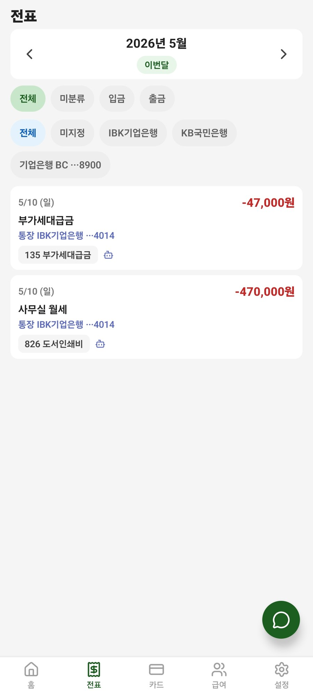
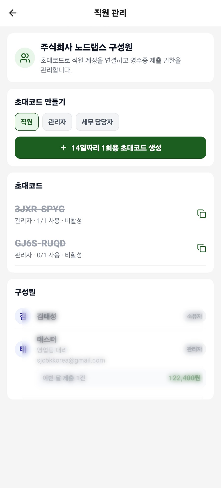
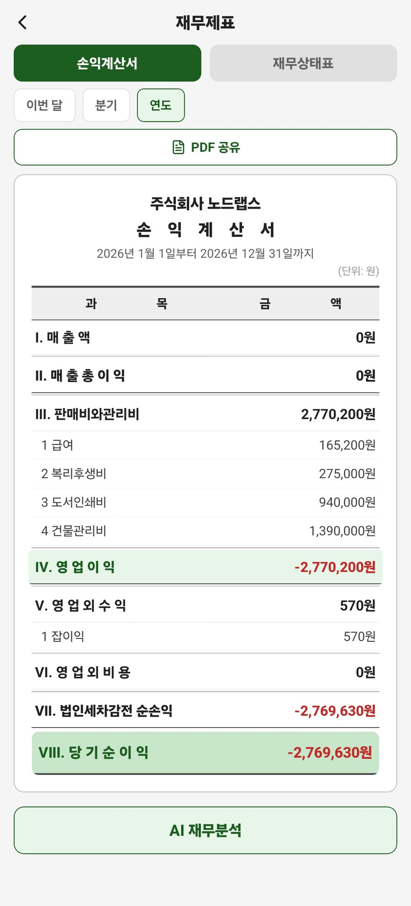
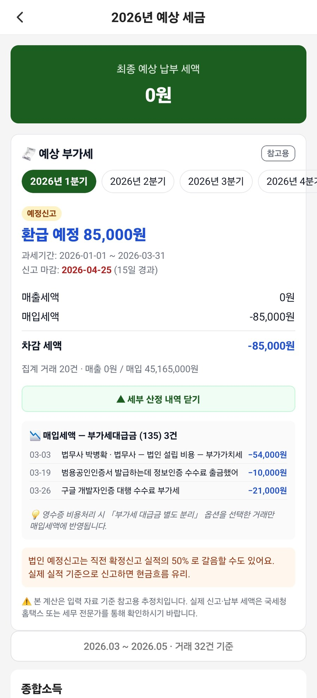
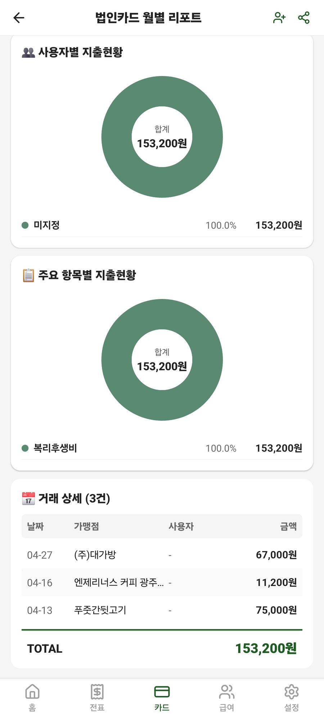
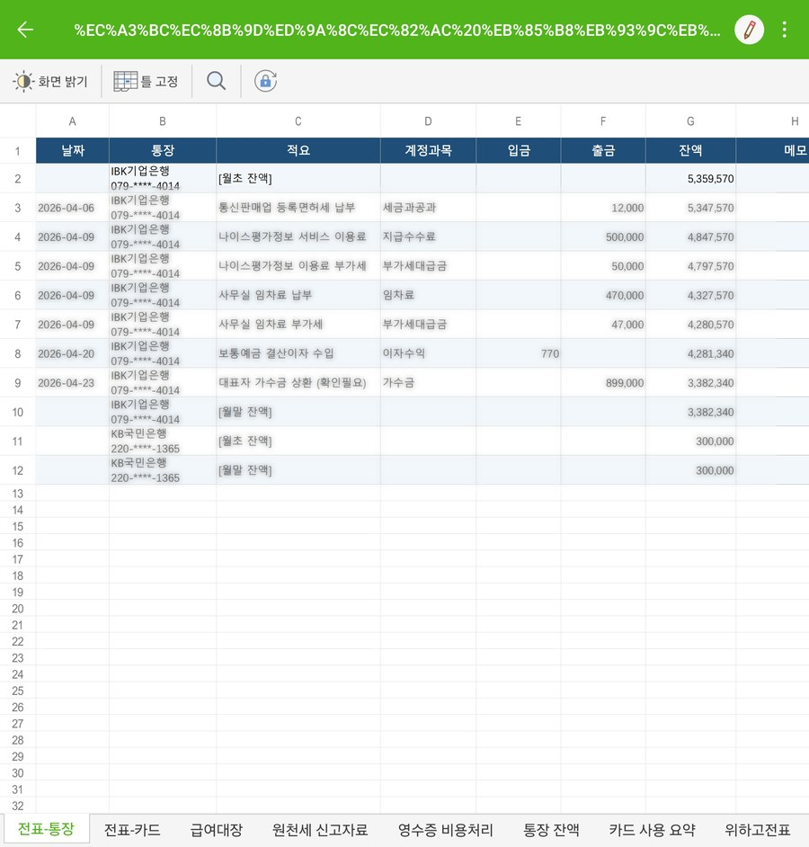
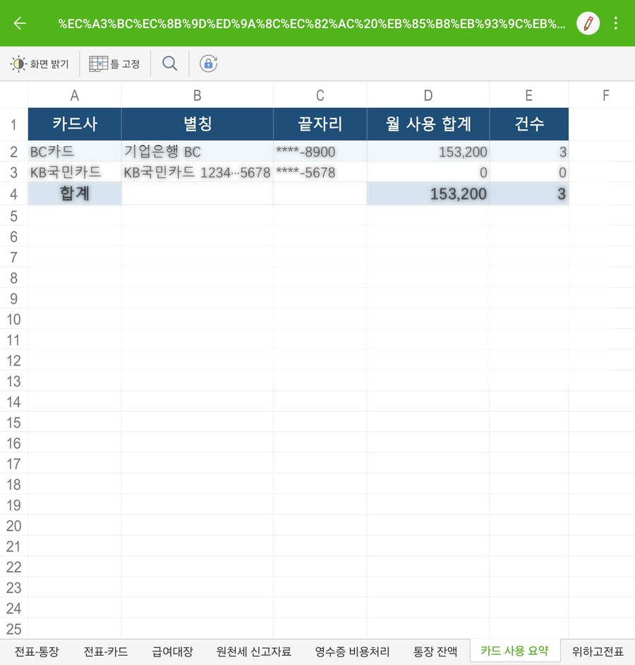
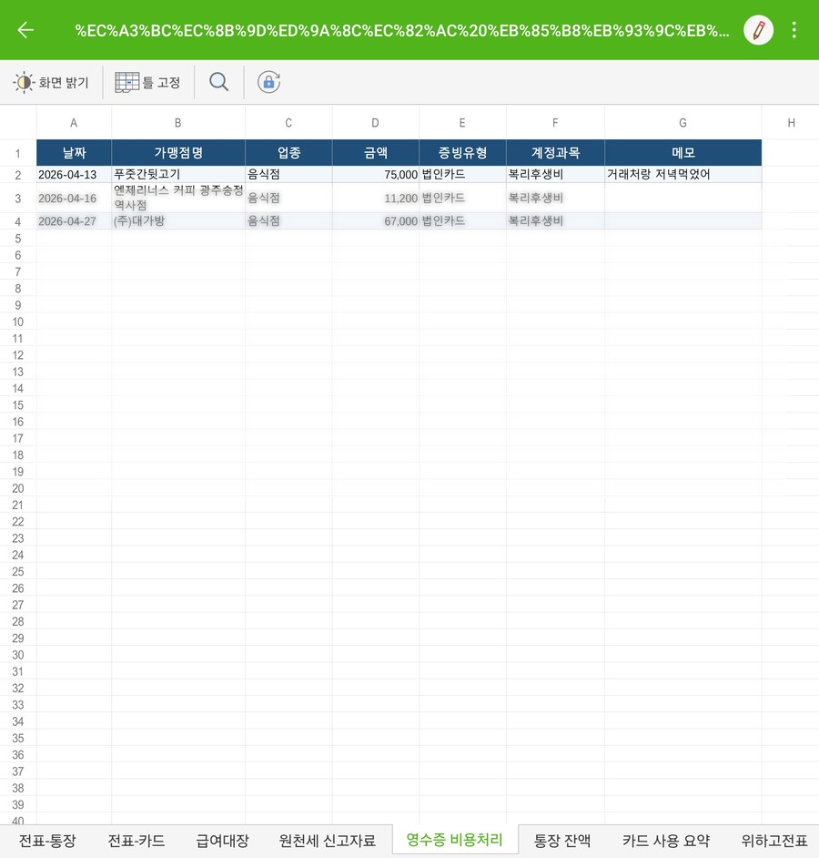

기장비서AI의 핵심은 “전문가용 회계 프로그램”이 아니라, 매일 바쁜 사장님이 놓치기 쉬운 세무자료를 미리 정리하고 질문할 수 있게 만드는 것입니다.
사진으로 남긴 영수증을 비용처리 후보로 모으고, 빠뜨린 지출을 줄입니다.
월별 지출과 매입/미처리 자료를 대시보드에서 바로 확인합니다.
부가세·종소세 예상치를 카드형 리포트로 보여줘 납부 준비를 돕습니다.
“이건 비용처리 돼?” 같은 질문을 대화처럼 묻고, 실무적인 답을 받습니다.
이번 달 손익과 계정과목별 지출을 카드처럼 보여줍니다. 숫자만 보지 않고 “무엇이 늘었는지”를 빠르게 파악합니다.
월별·상태별 전표를 확인하고 미처리 자료를 찾아냅니다. 정산 전에 놓친 지출을 줄이는 화면입니다.
카드·계좌·영수증이 세금 리포트와 연결되어, 월말/분기말마다 다시 정리하는 부담을 낮춥니다.
복잡한 세법 용어 대신 실제 질문으로 물어봅니다. 답변은 의사결정을 돕는 참고 자료로 활용합니다.
세무사가 필요한 자료 형태로 정리해 전달할 수 있습니다. 사장님은 앱에서 모으고, 세무사는 정리된 자료를 받는 흐름을 목표로 합니다.
영수증 사진, 카드 지출, 계좌 입출금을 놓치지 않게 쌓아둡니다.
비용처리 가능성, 누락된 자료, 신고 전 확인할 점을 쉬운 말로 안내합니다.
신고 시즌에 몰아서 찾지 않고, 엑셀 자료로 정리해 전달합니다.
대시보드, 리포트, 직원 관리, AI 세무 대화, 엑셀 내보내기까지 실제 사용 흐름에 맞춰 구성했습니다.

전표 목록월별 전표와 미처리 자료를 빠르게 확인합니다.
직원 관리초대코드로 구성원을 연결하고 역할별로 관리합니다.
손익계산서매출·매입·손익을 보고 AI 재무분석으로 이어집니다.
예상 부가세환급/납부 예상액과 계산 근거를 안내합니다.
거래 상세거래별 금액과 카테고리를 리포트 안에서 추적합니다.※ 공개용 이미지의 일부 개인정보·상세 행 데이터는 보호를 위해 흐림 처리했습니다.
앱 안에서 모은 자료를 엑셀 기반의 신고 보조 자료로 정리합니다. 사장님은 “찾기”보다 “확인”에 집중할 수 있습니다.

거래내역월별 거래 흐름을 표 형태로 정리합니다.
카드 사용내역카드 지출을 신고 전 검토용으로 모읍니다.
계좌 입출금입금·출금 자료를 세무자료 흐름에 맞게 정리합니다.기장비서AI는 숫자를 보여주는 데서 끝나지 않습니다. “이게 무슨 뜻인지”, “지금 무엇을 해야 하는지”를 질문하고 답을 받을 수 있어야 진짜 쓸모 있는 앱이 됩니다.
영수증을 찍고, 전표를 확인하고, 예상 세금을 보고, AI에게 물어보는 흐름까지. 세무기장을 사장님이 이해할 수 있는 언어로 바꿉니다.